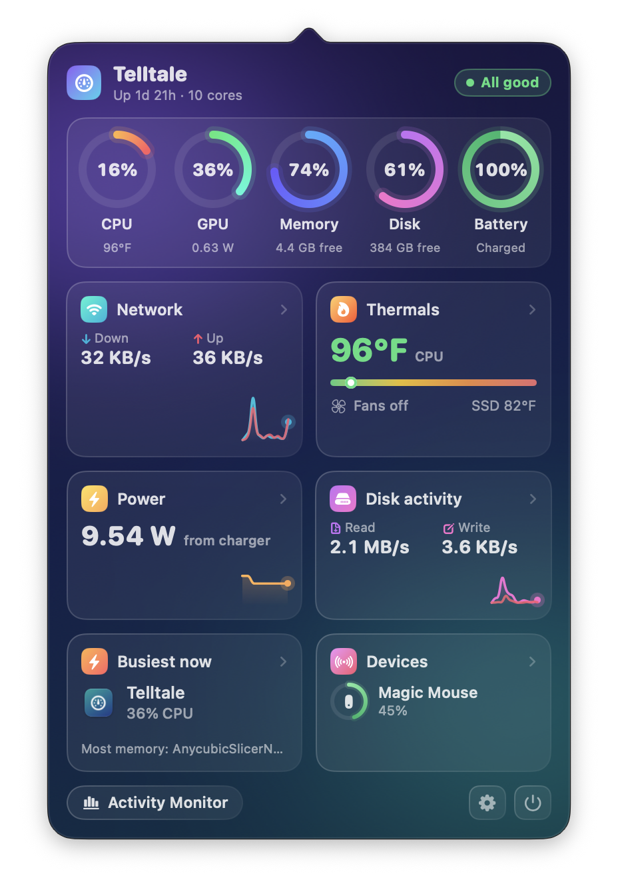
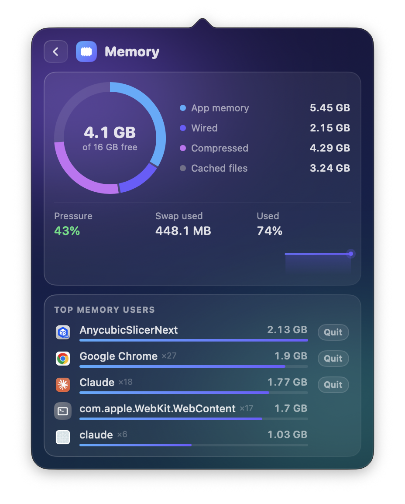
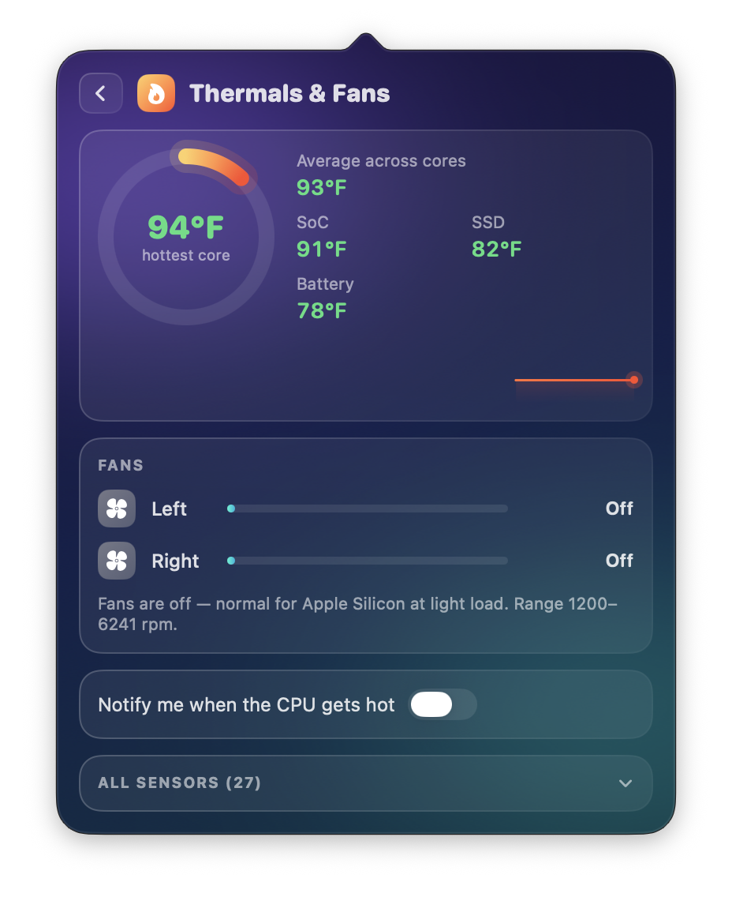
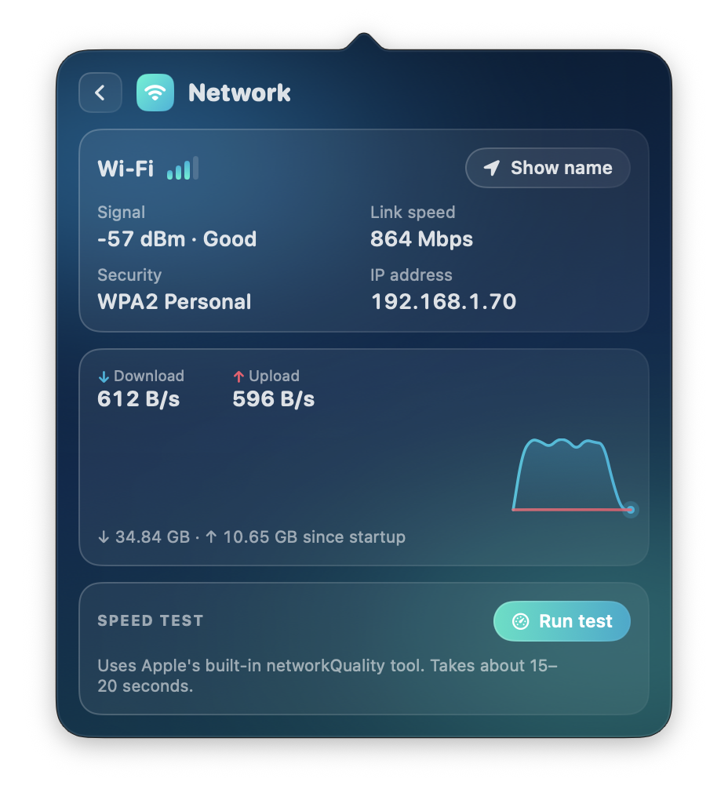
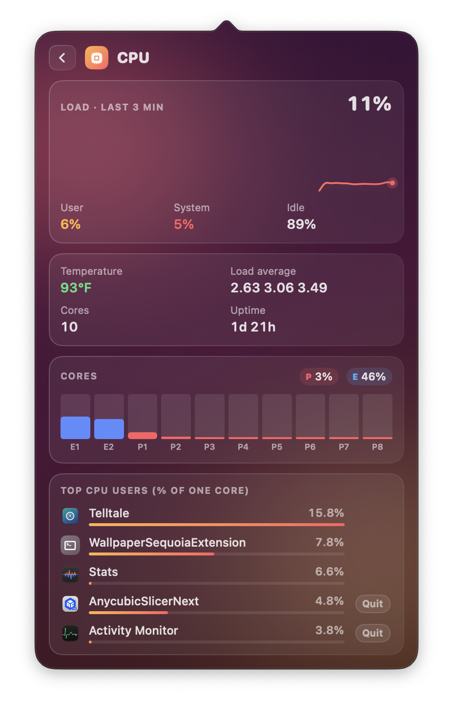
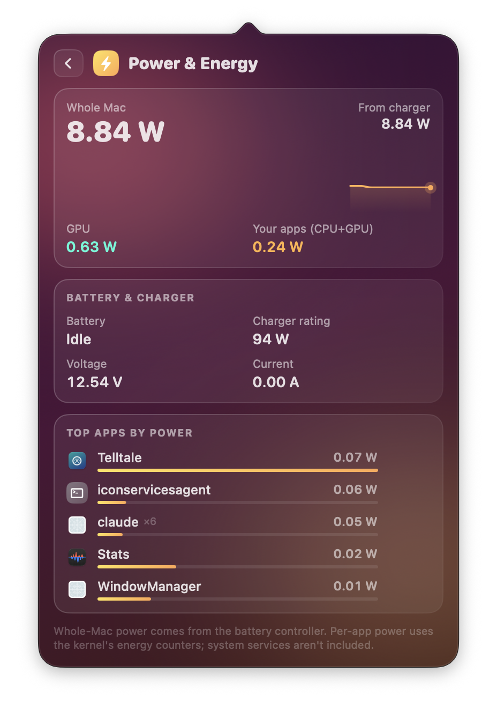
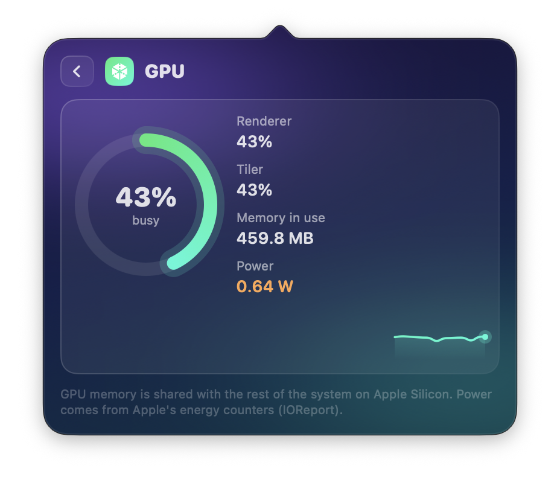
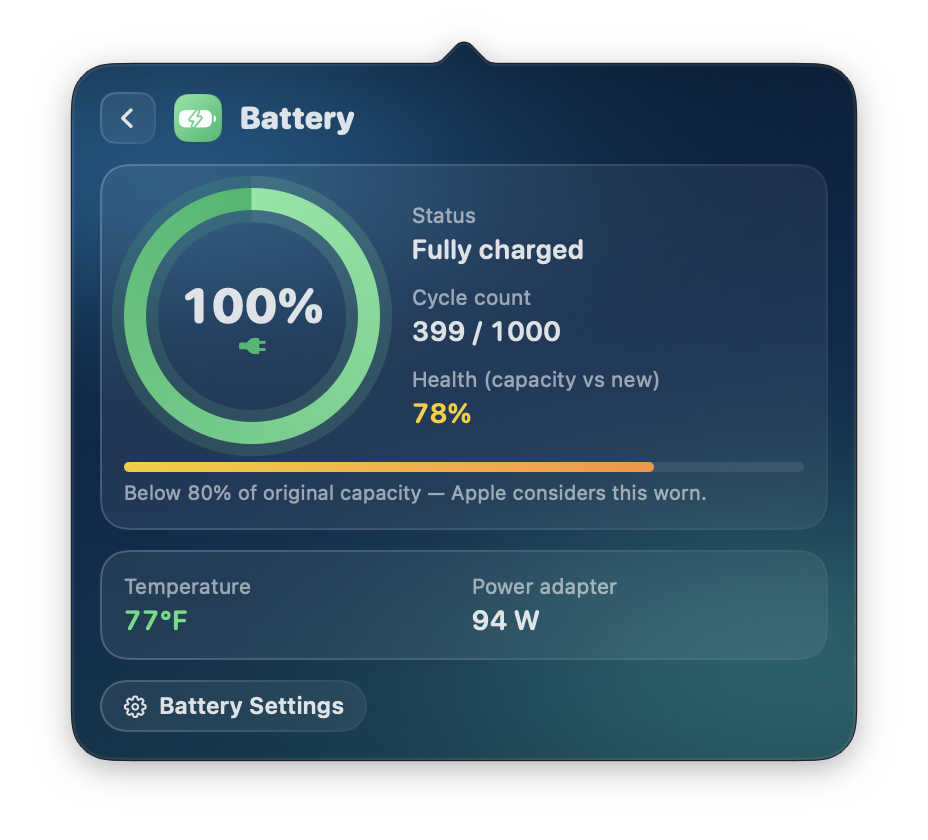
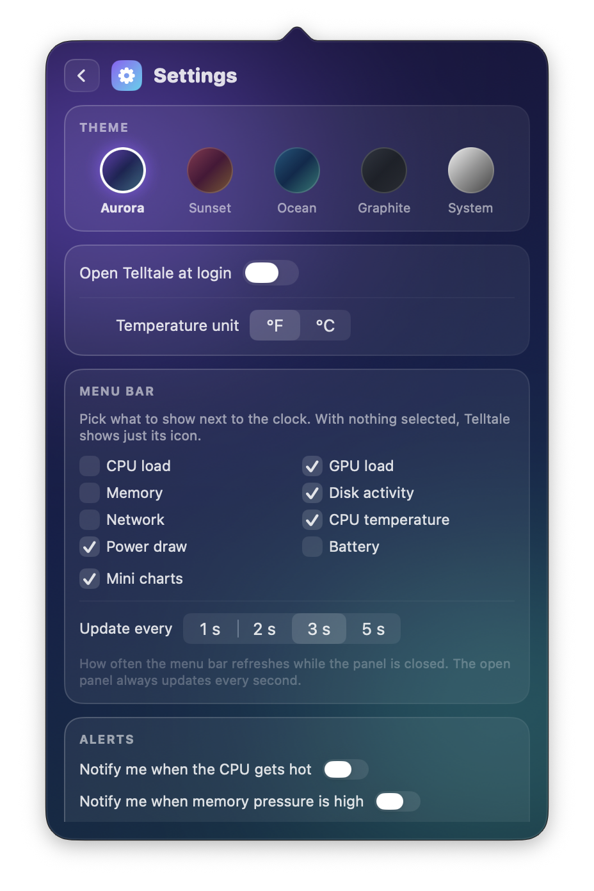

Your Mac's vital signs,
one click away.
Telltale is a beautiful, featherweight menu-bar monitor for CPU, GPU, memory, disk, power, battery, network, Bluetooth devices, temperatures and fans — that idles at about 13 MB and 0% CPU.
Universal app for Apple Silicon & Intel · ~2 MB download · No account, no tracking

Everything you check Activity Monitor for — and more
One panel, eight pages, zero clutter. Click any gauge or card to dive in.
CPU
Live load and history, per-core load split into performance and efficiency cores, and the apps using the most CPU.
GPU
Utilization, renderer and tiler load, GPU memory in use and GPU power in watts.
Power & energy
Whole-Mac power draw, charger input, battery watts, voltage and current — and the apps using the most energy.
Memory
App, wired, compressed and cached memory, real memory pressure and swap — plus the top memory users with a one-click Quit.
Storage
Available space as Finder counts it, live read/write speed, the apps hitting the disk hardest, and external drives with eject.
Battery
Charge and time left, cycle count, health versus design capacity, battery temperature and charger wattage.
Thermals & fans
Hottest and average CPU core, SoC, SSD and battery temperatures, every raw sensor, fan RPM — and alerts when it runs hot.
Network
Wi-Fi signal, link speed and security, live download/upload graphs, totals since startup and a built-in speed test.
Devices
Battery levels for Bluetooth accessories — Magic Mouse, Keyboard, Trackpad, AirPods — and connected drives.
Health at a glance
A status pill that turns amber or red for Running hot, Memory tight, Battery low or Disk nearly full.
Alerts
Get notified when the CPU runs hot, memory gets tight, or disk space or battery runs low — each with its own threshold.
Four moods. One tap.
Deep gradient themes with soft glows and glass cards — or a System theme that follows light and dark mode.
Every detail, one click deeper
Each gauge and card opens a focused page — no windows, no tabs, no setup.








Beautiful shouldn't mean heavy
Telltale is one native Swift binary that reads macOS directly — and only does real work while you're looking.
Idle means idle
With the panel closed, Telltale reads three cheap counters every 3 seconds. Process lists, sensors, battery, Wi-Fi and Bluetooth are only read while the panel is open.
Built on open, freed on close
The whole interface is created when you click the icon and released when the panel closes — so the UI costs nothing when you're not using it.
No per-frame work
Gauges sweep in once; live values then update in place instead of animating 120 times a second. Blurred backdrops and app icons are drawn once and reused.
Straight from macOS
Mach host statistics, libproc, IOKit, SMC and CoreWLAN — no kernel extensions, no root helper, no scraping other tools.
| Measured side by side | Telltale | Stats 3.1.1 (defaults) |
|---|---|---|
| Panel closed · icon only | 13 MB · 0.03% CPU | 73 MB · 4.9% CPU |
| Panel closed · 6 readouts + charts · every 3 s | 19 MB · 0.7% CPU | 73 MB · 5.0% CPU |
| Panel closed · 6 readouts + charts · every 1 s | 19 MB · 2.4% CPU | 73 MB · 5.0% CPU |
| Panel open · overview | 54 MB · 3.6% CPU | 73 MB · 5.3% CPU |
M1 Pro, 60 s per configuration, CPU as % of one core. Measure on your own Mac with ./scripts/measure.sh --compare Stats.
Install in a minute
Download the app, or build it yourself from source — there are no dependencies.
Download
- Get Telltale-x.y.z.zip from the latest release.
- Unzip and drag Telltale.app into Applications.
- Open it. On first launch, macOS asks you to confirm an app from the internet: go to System Settings → Privacy & Security and click Open Anyway.
Prefer the Terminal? xattr -dr com.apple.quarantine /Applications/Telltale.app
Build from source
Needs macOS 14+ and Xcode or the Command Line Tools.
# clone, build, install to ~/Applications and launch
git clone https://github.com/pri-te-sh/Telltale.git
cd Telltale
./build.sh --install
--universal builds for Apple Silicon and Intel · --zip packages a release.
Questions
Is Telltale really free?
Yes. It's MIT-licensed open source with no paid tier, no account and no tracking.
What data does it collect?
None. Telltale has no analytics, crash reporting or update checks. The only network traffic it ever creates is Apple's networkQuality speed test, and only when you press Run test.
Why only GPU and whole-Mac power, not CPU watts?
On current macOS versions the CPU and Neural Engine energy counters read zero for apps without root. Telltale shows whole-Mac power from the battery controller, GPU power from Apple's energy counters, and per-app power from the kernel.
Can it control my fans?
Not yet. Reading fan speeds is safe and needs no special rights; setting them requires a privileged helper and can overheat a Mac if done wrong. It may arrive later as an opt-in feature.
Why does it want Location access?
Only if you click “Show name” on the Network page. Since macOS Sonoma, apps can't see your Wi-Fi network's name without Location permission. Telltale never reads your location.
Why isn't my iPhone's battery shown?
macOS doesn't share iPhone battery levels with third-party apps. Bluetooth accessories like Magic Mouse, keyboards, trackpads and AirPods are supported.
Does it work on Intel Macs?
Releases are universal. Everything works on Intel except some temperature readings, which use Apple Silicon sensors and may show “—”.
Why isn't it on the Mac App Store?
App Store apps are sandboxed and can't read thermal sensors, fan speeds or other apps' resource usage — the things that make a system monitor useful.
Keep an eye on your Mac — without it keeping an eye on your battery.
Free, open source, and about 13 MB.